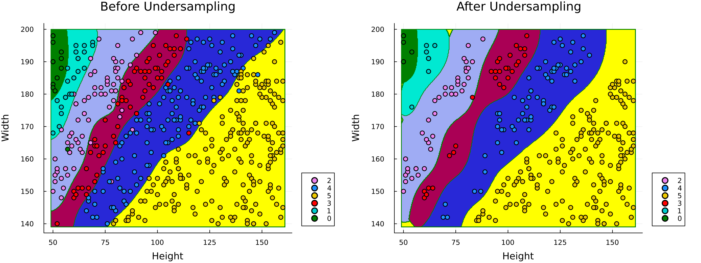
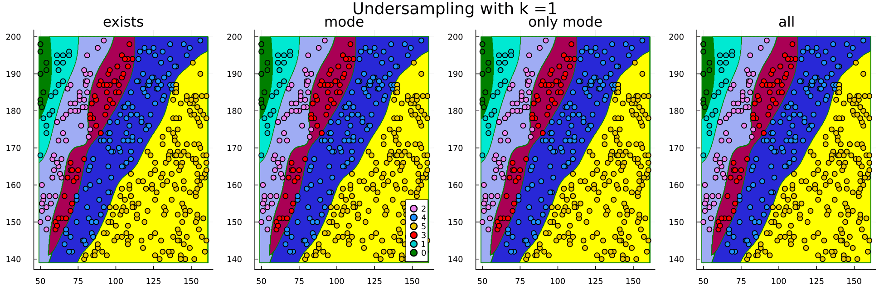

Effect of ENN Hyperparameters
using Random
using CSV
using DataFrames
using MLJ
using Imbalance
using ScientificTypes
using Plots, MeasuresLoading Data
In this example, we will consider the BMI dataset found on Kaggle where the objective is to predict the BMI index of individuals given their gender, weight and height.
CSV gives us the ability to easily read the dataset after it's downloaded as follows
df = CSV.read("../datasets/bmi.csv", DataFrame)
# Display the first 5 rows with DataFrames
first(df, 5) |> pretty┌─────────┬────────┬────────┬───────┐
│ Gender │ Height │ Weight │ Index │
│ String7 │ Int64 │ Int64 │ Int64 │
│ Textual │ Count │ Count │ Count │
├─────────┼────────┼────────┼───────┤
│ Male │ 174 │ 96 │ 4 │
│ Male │ 189 │ 87 │ 2 │
│ Female │ 185 │ 110 │ 4 │
│ Female │ 195 │ 104 │ 3 │
│ Male │ 149 │ 61 │ 3 │
└─────────┴────────┴────────┴───────┘We will drop the gender attribute for purposes of visualization and to have more options for the model.
select!(df, Not(:Gender)) |> prettyCoercing Data
ScientificTypes.schema(df)┌────────┬──────────┬───────┐
│ names │ scitypes │ types │
├────────┼──────────┼───────┤
│ Height │ Count │ Int64 │
│ Weight │ Count │ Int64 │
│ Index │ Count │ Int64 │
└────────┴──────────┴───────┘Weight and Height should be Continuous and Index should be an OrderedFactor
df = coerce(df,
:Height => Continuous,
:Weight => Continuous,
:Index => OrderedFactor)
ScientificTypes.schema(df)┌────────┬──────────────────┬─────────────────────────────────┐
│ names │ scitypes │ types │
├────────┼──────────────────┼─────────────────────────────────┤
│ Height │ Continuous │ Float64 │
│ Weight │ Continuous │ Float64 │
│ Index │ OrderedFactor{6} │ CategoricalValue{Int64, UInt32} │
└────────┴──────────────────┴─────────────────────────────────┘Unpacking Data
Both MLJ and the pure functional interface of Imbalance assume that the observations table X and target vector y are separate. We can accomplish that by using unpack from MLJ
y, X = unpack(df, ==(:Index); rng=123);
first(X, 5) |> pretty┌────────────┬────────────┐
│ Height │ Weight │
│ Float64 │ Float64 │
│ Continuous │ Continuous │
├────────────┼────────────┤
│ 173.0 │ 82.0 │
│ 187.0 │ 121.0 │
│ 144.0 │ 145.0 │
│ 156.0 │ 74.0 │
│ 167.0 │ 151.0 │
└────────────┴────────────┘We will skip splitting the data since the main purpose of this tutorial is visualization.
Undersampling
Before undersampling, let's check the balance of the data
checkbalance(y; ref="minority")0: ▇▇▇ 13 (100.0%)
1: ▇▇▇▇▇▇ 22 (169.2%)
3: ▇▇▇▇▇▇▇▇▇▇▇▇▇▇▇▇▇ 68 (523.1%)
2: ▇▇▇▇▇▇▇▇▇▇▇▇▇▇▇▇▇ 69 (530.8%)
4: ▇▇▇▇▇▇▇▇▇▇▇▇▇▇▇▇▇▇▇▇▇▇▇▇▇▇▇▇▇▇▇▇▇ 130 (1000.0%)
5: ▇▇▇▇▇▇▇▇▇▇▇▇▇▇▇▇▇▇▇▇▇▇▇▇▇▇▇▇▇▇▇▇▇▇▇▇▇▇▇▇▇▇▇▇▇▇▇▇▇▇ 198 (1523.1%)Let's use ENN undersampling to undersample the data. ENN undersamples the data by "cleaning it out" or in another words deleting any point that violates a certain condition. We can limit the number of points that are deleted by setting the min_ratios parameter.
We will set k=1 and keep_condition="only mode" which means that any point with a label that is not the only most common one amongst its 1-nearest neighbors will be deleted (i.e., must have same label as its nearest neighbor). By setting min_ratios=1.0 we constraint that points should never be deleted form any class if it's ratio relative to the minority class will be less than 1.0. This also means that no points will be deleted from the minority class.
X_under, y_under = enn_undersample(
X,
y;
k = 1,
keep_condition = "only mode",
min_ratios=0.01,
rng = 42,
)(448×2 DataFrame
Row │ Height Weight
│ Float64 Float64
─────┼──────────────────
1 │ 173.0 82.0
2 │ 182.0 70.0
3 │ 156.0 52.0
4 │ 172.0 67.0
5 │ 162.0 58.0
6 │ 180.0 75.0
7 │ 190.0 83.0
8 │ 195.0 81.0
⋮ │ ⋮ ⋮
442 │ 196.0 50.0
443 │ 191.0 54.0
444 │ 185.0 52.0
445 │ 182.0 50.0
446 │ 198.0 50.0
447 │ 198.0 50.0
448 │ 181.0 51.0
433 rows omitted, CategoricalArrays.CategoricalValue{Int64, UInt32}[2, 2, 2, 2, 2, 2, 2, 2, 2, 2 … 0, 0, 0, 0, 0, 0, 0, 0, 0, 0])checkbalance(y_under; ref="minority")0: ▇▇▇ 11 (100.0%)
1: ▇▇▇▇▇ 19 (172.7%)
2: ▇▇▇▇▇▇▇▇▇▇▇▇▇▇▇ 56 (509.1%)
3: ▇▇▇▇▇▇▇▇▇▇▇▇▇▇▇ 58 (527.3%)
4: ▇▇▇▇▇▇▇▇▇▇▇▇▇▇▇▇▇▇▇▇▇▇▇▇▇▇▇▇▇▇ 115 (1045.5%)
5: ▇▇▇▇▇▇▇▇▇▇▇▇▇▇▇▇▇▇▇▇▇▇▇▇▇▇▇▇▇▇▇▇▇▇▇▇▇▇▇▇▇▇▇▇▇▇▇▇▇▇ 189 (1718.2%)This indeeds aligns with the desired ratios we have set earlier.
Training the Model
Because we have scientific types setup, we can easily check what models will be able to train on our data. This should guarantee that the model we choose won't throw an error due to types after feeding it the data.
models(matching(X_under, y_under))53-element Vector{NamedTuple{(:name, :package_name, :is_supervised, :abstract_type, :deep_properties, :docstring, :fit_data_scitype, :human_name, :hyperparameter_ranges, :hyperparameter_types, :hyperparameters, :implemented_methods, :inverse_transform_scitype, :is_pure_julia, :is_wrapper, :iteration_parameter, :load_path, :package_license, :package_url, :package_uuid, :predict_scitype, :prediction_type, :reporting_operations, :reports_feature_importances, :supports_class_weights, :supports_online, :supports_training_losses, :supports_weights, :transform_scitype, :input_scitype, :target_scitype, :output_scitype)}}:
(name = AdaBoostClassifier, package_name = MLJScikitLearnInterface, ... )
(name = AdaBoostStumpClassifier, package_name = DecisionTree, ... )
(name = BaggingClassifier, package_name = MLJScikitLearnInterface, ... )
(name = BayesianLDA, package_name = MLJScikitLearnInterface, ... )
(name = BayesianLDA, package_name = MultivariateStats, ... )
(name = BayesianQDA, package_name = MLJScikitLearnInterface, ... )
(name = BayesianSubspaceLDA, package_name = MultivariateStats, ... )
(name = CatBoostClassifier, package_name = CatBoost, ... )
(name = ConstantClassifier, package_name = MLJModels, ... )
(name = DecisionTreeClassifier, package_name = BetaML, ... )
⋮
(name = SGDClassifier, package_name = MLJScikitLearnInterface, ... )
(name = SVC, package_name = LIBSVM, ... )
(name = SVMClassifier, package_name = MLJScikitLearnInterface, ... )
(name = SVMLinearClassifier, package_name = MLJScikitLearnInterface, ... )
(name = SVMNuClassifier, package_name = MLJScikitLearnInterface, ... )
(name = StableForestClassifier, package_name = SIRUS, ... )
(name = StableRulesClassifier, package_name = SIRUS, ... )
(name = SubspaceLDA, package_name = MultivariateStats, ... )
(name = XGBoostClassifier, package_name = XGBoost, ... )Let's go for an SVM from LIBSVM
import Pkg; Pkg.add("LIBSVM")
import LIBSVM; Updating registry at `~/.julia/registries/General`
Updating git-repo `https://github.com/JuliaRegistries/General.git`
Resolving package versions...
No Changes to `~/Documents/GitHub/Imbalance.jl/docs/Project.toml`
No Changes to `~/Documents/GitHub/Imbalance.jl/docs/Manifest.toml`Before Undersampling
# 1. Load the model
SVC = @load SVC pkg=LIBSVM
# 2. Instantiate it
model = SVC(kernel=LIBSVM.Kernel.RadialBasis, gamma=0.01) ## instance
# 3. Wrap it with the data in a machine
mach = machine(model, X, y)
# 4. fit the machine learning model
fit!(mach)import MLJLIBSVMInterface ✔
┌ Info: For silent loading, specify `verbosity=0`.
└ @ Main /Users/essam/.julia/packages/MLJModels/EkXIe/src/loading.jl:159
┌ Info: Training machine(SVC(kernel = RadialBasis, …), …).
└ @ MLJBase /Users/essam/.julia/packages/MLJBase/ByFwA/src/machines.jl:492
trained Machine; caches model-specific representations of data
model: SVC(kernel = RadialBasis, …)
args:
1: Source @987 ⏎ Table{AbstractVector{Continuous}}
2: Source @104 ⏎ AbstractVector{OrderedFactor{6}}After Undersampling
# 3. Wrap it with the data in a machine
mach_under = machine(model, X_under, y_under)
# 4. fit the machine learning model
fit!(mach_under)┌ Info: Training machine(SVC(kernel = RadialBasis, …), …).
└ @ MLJBase /Users/essam/.julia/packages/MLJBase/ByFwA/src/machines.jl:492
trained Machine; caches model-specific representations of data
model: SVC(kernel = RadialBasis, …)
args:
1: Source @123 ⏎ Table{AbstractVector{Continuous}}
2: Source @423 ⏎ AbstractVector{OrderedFactor{6}}Plot Decision Boundaries
Construct ranges for each feature and consecutively a grid
height_range =
range(minimum(X.Height) - 1, maximum(X.Height) + 1, length = 400)
weight_range =
range(minimum(X.Weight) - 1, maximum(X.Weight) + 1, length = 400)
grid_points = [(h, w) for h in height_range, w in weight_range]400×400 Matrix{Tuple{Float64, Float64}}:
(139.0, 49.0) (139.0, 49.2807) (139.0, 49.5614) … (139.0, 161.0)
(139.153, 49.0) (139.153, 49.2807) (139.153, 49.5614) (139.153, 161.0)
(139.306, 49.0) (139.306, 49.2807) (139.306, 49.5614) (139.306, 161.0)
(139.459, 49.0) (139.459, 49.2807) (139.459, 49.5614) (139.459, 161.0)
(139.612, 49.0) (139.612, 49.2807) (139.612, 49.5614) (139.612, 161.0)
(139.764, 49.0) (139.764, 49.2807) (139.764, 49.5614) … (139.764, 161.0)
(139.917, 49.0) (139.917, 49.2807) (139.917, 49.5614) (139.917, 161.0)
(140.07, 49.0) (140.07, 49.2807) (140.07, 49.5614) (140.07, 161.0)
(140.223, 49.0) (140.223, 49.2807) (140.223, 49.5614) (140.223, 161.0)
(140.376, 49.0) (140.376, 49.2807) (140.376, 49.5614) (140.376, 161.0)
⋮ ⋱
(198.777, 49.0) (198.777, 49.2807) (198.777, 49.5614) (198.777, 161.0)
(198.93, 49.0) (198.93, 49.2807) (198.93, 49.5614) (198.93, 161.0)
(199.083, 49.0) (199.083, 49.2807) (199.083, 49.5614) (199.083, 161.0)
(199.236, 49.0) (199.236, 49.2807) (199.236, 49.5614) (199.236, 161.0)
(199.388, 49.0) (199.388, 49.2807) (199.388, 49.5614) … (199.388, 161.0)
(199.541, 49.0) (199.541, 49.2807) (199.541, 49.5614) (199.541, 161.0)
(199.694, 49.0) (199.694, 49.2807) (199.694, 49.5614) (199.694, 161.0)
(199.847, 49.0) (199.847, 49.2807) (199.847, 49.5614) (199.847, 161.0)
(200.0, 49.0) (200.0, 49.2807) (200.0, 49.5614) (200.0, 161.0)Evaluate the grid with the machine before and after undersampling
grid_predictions =[
predict(mach, Tables.table(reshape(collect(point), 1, 2)))[1] for
point in grid_points
]
grid_predictions_under = [
predict(mach_under, Tables.table(reshape(collect(point), 1, 2)))[1] for
point in grid_points
]Make two contour plots using the grid predictions before and after oversampling
colors = [:green, :aqua, :violet, :red, :blue, :yellow]
p = contourf(weight_range, height_range, grid_predictions,
levels = 6, color = colors, colorbar = false)
p_under = contourf(weight_range, height_range, grid_predictions_under,
levels = 6, color = colors, colorbar = false)
println()labels = unique(y)
colors = Dict(
0 => "green",
1 => "cyan3",
2 => "violet",
3 => "red",
4 => "dodgerblue",
5 => "gold2",
)
for label in labels
scatter!(p, X.Weight[y.==label], X.Height[y.==label],
color = colors[label], label = label, markerstrokewidth = 1.5,
title = "Before Undersampling")
scatter!(p_under, X_under.Weight[y_under.==label], X_under.Height[y_under.==label],
color = colors[label], label = label, markerstrokewidth = 1.5,
title = "After Undersampling")
end
plot_res = plot(
p,
p_under,
layout = (1, 2),
xlabel = "Height",
ylabel = "Width",
size = (1200, 450),
margin = 5mm, dpi = 200,
legend = :outerbottomright,
)
savefig(plot_res, "./assets/ENN-before-after.png")

Effect of $k$ Hyperparameter
Now let's study the cleaning effect as k increases for all types of keep conditions of undersampling.
anim = @animate for k ∈ 1:15
conditions = ["exists", "mode", "only mode", "all"]
plots = [plot() for _ in 1:4]
data_list = []
for i in 1:4
X_under, y_under = enn_undersample(
X,
y;
k = k,
keep_condition = conditions[i],
min_ratios = 0.01,
rng = 42,
)
# fit machine
mach_under = machine(model, X_under, y_under)
fit!(mach_under, verbosity = 0)
# grid predictions
grid_predictions_under = [
predict(mach_under, Tables.table(reshape(collect(point), 1, 2)))[1] for
point in grid_points
]
# plot
colors = [:green, :aqua, :violet, :red, :blue, :yellow]
contourf!(plots[i], weight_range, height_range, grid_predictions_under,
levels = 6, color = colors, colorbar = false)
colors = Dict(
0 => "green",
1 => "cyan3",
2 => "violet",
3 => "red",
4 => "dodgerblue",
5 => "gold2",
)
for label in labels
scatter!(plots[i], X_under.Weight[y_under.==label],
X_under.Height[y_under.==label],
color = colors[label], label = label, markerstrokewidth = 1.5,
title = "$(conditions[i])", legend = ((i == 2) ? :bottomright : :none))
end
plot!(
plots[1], plots[2], plots[3], plots[4],
layout = (1, 4),
size = (1300, 420),
plot_title = "Undersampling with k =$k",
)
end
plot!(dpi = 150)
end
gif(anim, "./assets/enn-k-animation.gif", fps=1)
As we can see, the most constraining condition is all. It deletes any point where the label is different than any of the nearest k neighbors which also explains why it's the most sensitive to the hyperparameter k.